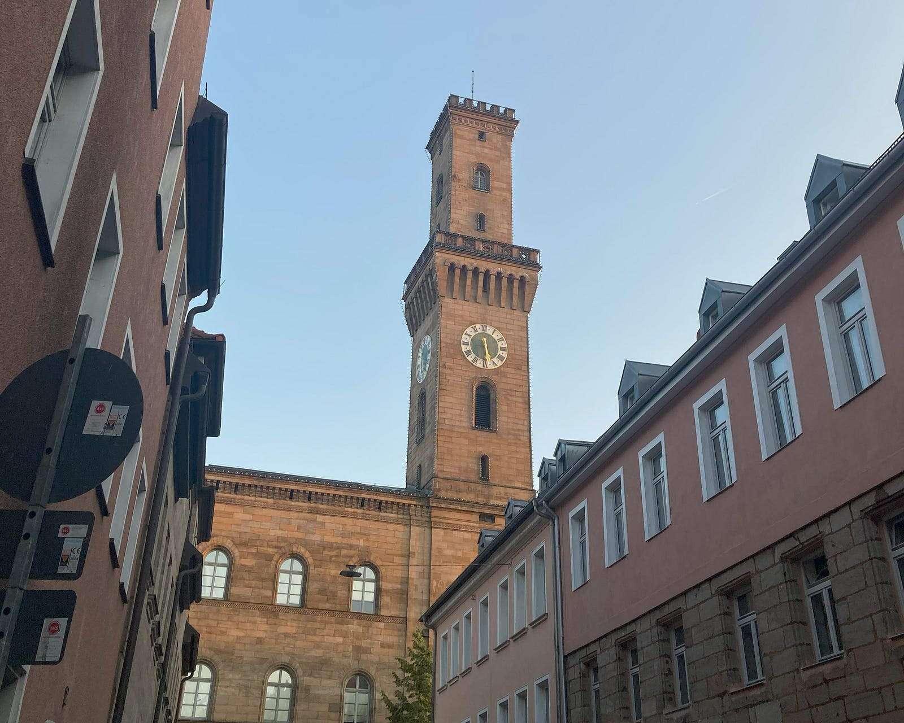
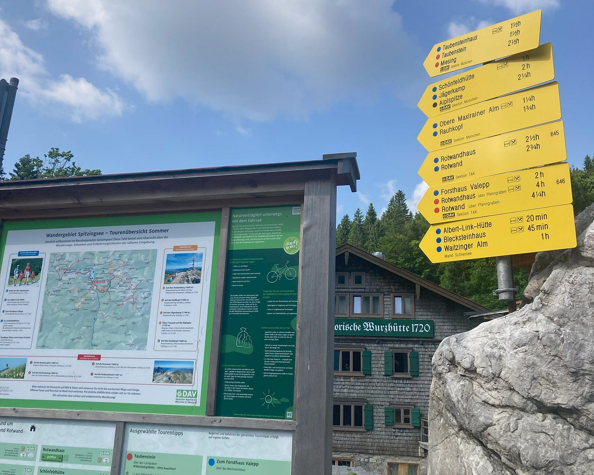
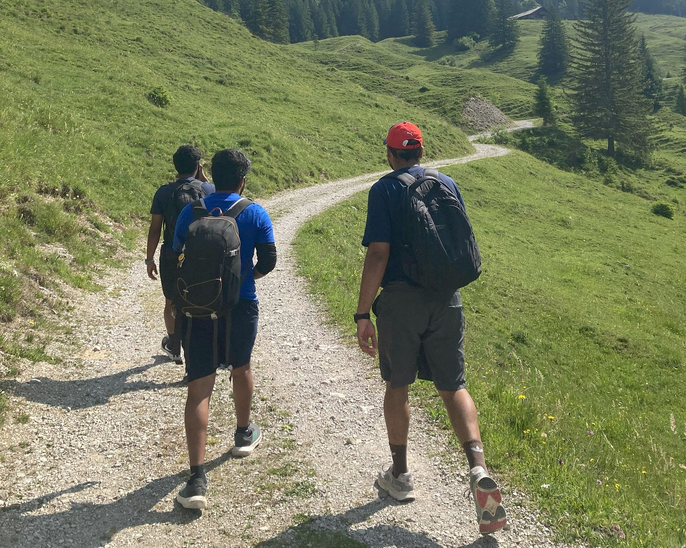
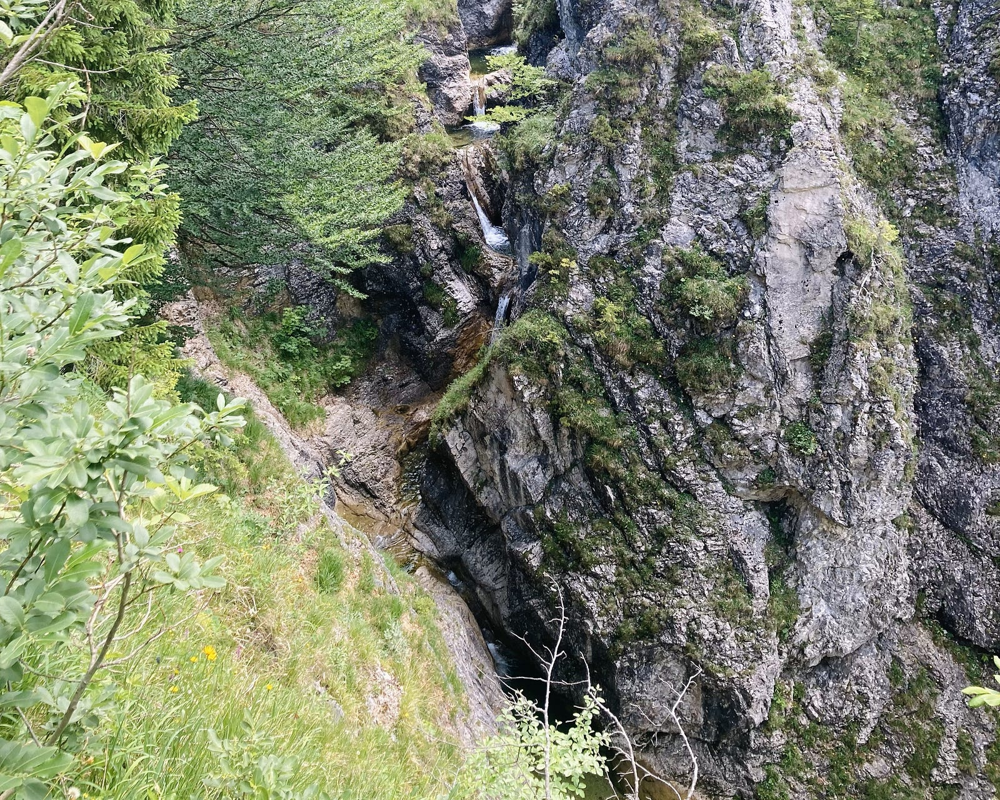
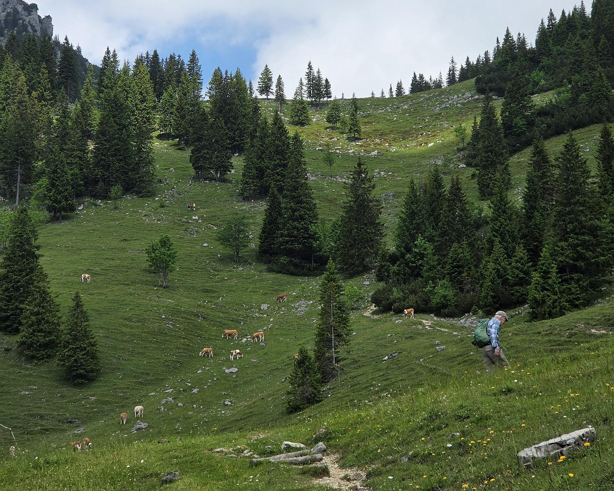
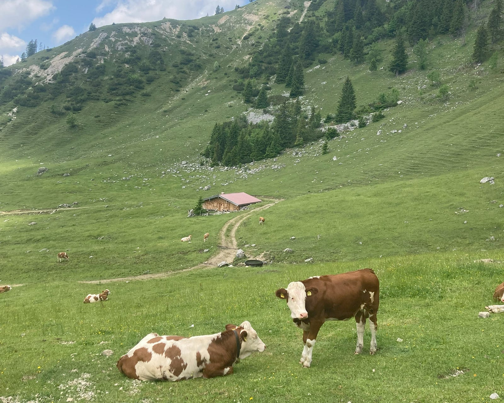
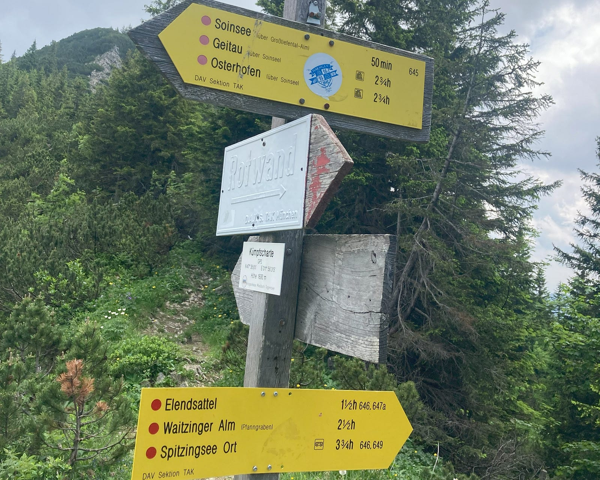
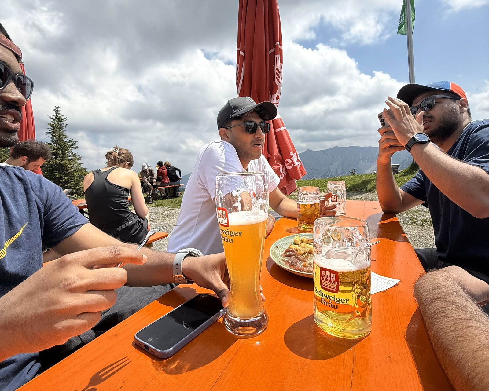
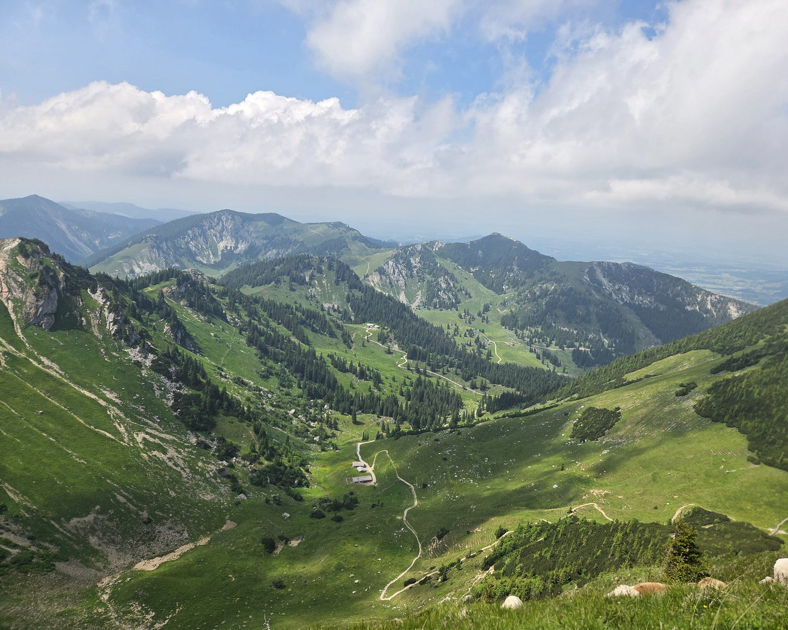
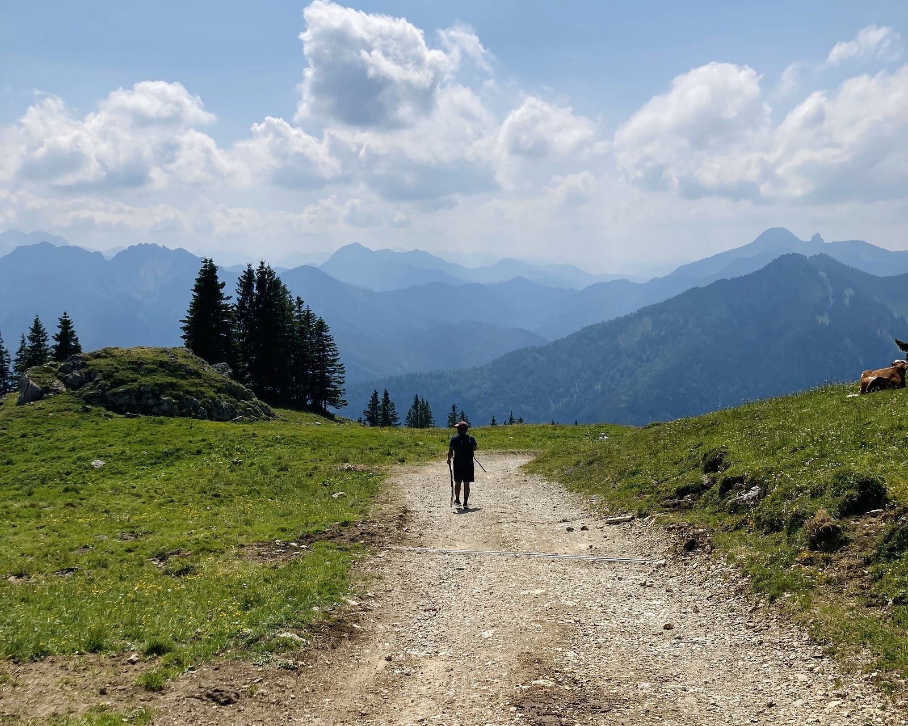

Von Rathaus bis Rotwand; From City hall to Red Wall
Quick plans for quick actions
Just a few days after their first hike, my friends were already planning the next adventure — and I knew I had to be part of it as I missed the first. This time, we’re heading to the Mangfall Mountains (Mangfallgebirge), placed away in the easternmost part of the Bavarian Prealps, right near the Germany-Austria border.
Our goal? “Rotwand” — a 1,884m high peak that’s one of the most popular hiking spots in southern Germany. And the best part is, it’s easily reachable from the beautiful lake of Spitzingsee. We’re aiming for an 800m hike from the lake to the summit, and honestly, it feels like the perfect time to go. Not too hot, not too cold — just right for a chill yet adventurous day in the Bavarian alps.
From city crowd to bavarian alps
The journey begins from “Fürth Rathaus”, as we planned. Our assembly point is the nearby city, Nürnberg and from there begins the long halt to München via RE01 at roughly 7 minutes past 6 in the morning. We always prefer to start early, to have a smooth, hustle free trips. And the best part is, it took exactly 1 hour 29min as planned and DB is always on time during early hours :)

From long trip to the calm lake of Spitzingsee
Once we reached the Spitzingsee, there were many other groups with the same destination and same mentality. Surprisingly most of them were old fellow natives; some were solo, well prepared and loaded with their usual gears and mostly with good amount of water. For them, I think this is just another peak which they do normally during every summer.
To start with, there is a big route map with some insights and final view. A detailed explanation of possible routes, with some quick guides and timing. There are two routes for our trek; either the easy, most used, less view, more explored blue route with 2 and 3/4 h to the top or the difficult, less chosen, wild, less explored red route shown with a time frame of 4 and 1/4 h. And we chosen the latter and it was worth trying at the end!

The Start: Plane Terrain and Less People
Initially the route found to be strange to us because most people with us took the blue one and we tried the other. Still the initial path was mostly flat and easily walkable with proper sign boards. But we had a second thought of wondering whether we made a wrong move or not. But soon later, the route becomes narrowed down and irregular. We had less breaks and continued straight for another ~ 45 mins.

Into the Wild: Nature and Nature
After few kilometers, the path got totally changed. The open long views becomes narrowed path with irregular stones making it tough for a quick walk. And now we feels the change that we entered into a forest. Not many movements of other groups was noticed here and we started getting hungry and thirsty. We had our break section inside the forest and it was one of the best refreshment spot we got experienced. In between there was a water passage near our path. We all splashed our faces in the cold water stream. Freshened Up!!! Move on..

The Motive: A young co-traveller at his best
During the break, there comes the first person who was behind us for a long time. He started smiling at us and began fixing his gears and then moved on. No surprise! He was in his 60s or 70s, still showing up like a 25 year old young energetic person traveling ohne group. We crossed each others many times and at one point he keep on moving until we tried to capture a good picture of him with the scenic beauty of nature.

The Middle: Valley and Views
After the tough and uneven forest route, now comes the open valley with some great views and a cold breeze of wind that’s quite refreshing and joyful. We start capturing some moments and then kept on moving. Now, approx. we are half way in our journey and started seeing some cows. Most of them holds a bell around neck that makes the music of the valley. When a long breeze passes by it gives the bgm music for the scene. That was one of it’s kind experience we had so far.

Intermediate Reward: The View in-between
Once the valley is covered, we were almost tired and took a long break. Had few talks during rest time and starts seeing many co-trekkers who passes by, get recharged with some food and water. We again start looking for the remaining time and one of the cross-by fellow given the hint that it’s almost near. That brings the smile on all of us. Later, we find the navigation sign with detailed near by locations and our 3 and 3/4 h part is done.

The Alpine Hut: Rotwandhaus und Bier
Just below the final Rotwand at around 1,737m, we reached the rest stop which comes with Schweiger Brau bier. They offer some traditional bavarian meals and drinks. When we reached there, most of the hikers are having their food and drinks with a low-voice chit-chats. A reward after the long trek brings the great view with some cold bier and friends.

The End: Rotwand and the View
Yes!!! we made it finally after a long trek starting at 9 in the morning and reaching here after a long 4–5 h trek, we got the best view that we deserved. I could feel the fast cold breeze of wind and the peace that we all looked for. We spent here for a while and relaxed. Planned the return and a dip into the lake for few minutes is the next motivation to end the trek. We finally made our day with this view and had fun. No more talks, just looking into the nature!

The Return: Fast and Easy Blue
Now we plans to get down to the lake valley of Spitzingsee; there comes the last part. Blue route founds to be more structured and easy to move comparing the first one. We moved as quick as we can and was able to reach down 40 min before the last bus, which was scheduled to take from there at 17:30. Things went as planned and no more worries at the end! Despite the height, this was fairly beginner friendly and I would suggest this to anyone who plans to explore this summer into the bavarian alps.

Thanks a lot for reading my first blog! I’m still at a starting phase, so pardon any typos or rough edges — I’m learning as I go. More adventures (and hopefully fewer mistakes) coming your way soon :)
Until then, stay curious and keep exploring!
— Vishakh Cheruparambath